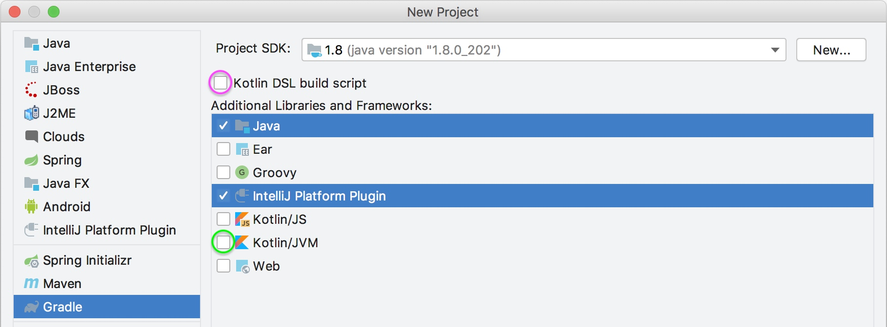

提升代码开发效率，让自己的编程环境更加强大易用。
插件能做什么？
IDEA 的插件几乎可以做任何事情，因为它把 IDE 本身的能力都封装好开放出来了。主要的插件功能包含以下四种：
- 自定义语言支持：如果有 IDEA 暂时不支持的语言，你可以自己写一个插件来支持，例如 Go 语言原来的支持就是通过插件做的，后来单独做了一个 Goland。官方有自定义语言插件支持的教程。
- 框架支持：例如Struts 2 的框架支持
- 工具集成：可以给 IDEA 的自带功能进行增强，例如对 Git 的操作增加 CodeReview 的功能。参考Gerrit
- 用户界面：自定义的插件改变用户界面。参考BackgroundImage
- 代码编辑：快速生成代码，提升开发效率
开发环境
开发IDEA插件有以下这些依赖：
- IntelliJ IDEA Community Edition
- IntelliJ IDEA Community Edition 源码
安装IntelliJ IDEA Community Edition
你可能已经安装了Ultimate版本，但是你还是需要安装IDEA的社区版本。因为商业版是闭源的，所以在调试时无法调试核心代码。
新建项目
配置项目类型

- 在左侧的项目类型窗格中，选择
Gradle。 - 指定基于Java 8 JDK的Project SDK。该SDK将是用于运行Gradle的默认JRE，并且是用于编译插件Java源代码的JDK版本。
- 在 Additional Libraries and Frameworks 面板中，选择Java和IntelliJ Platform Plugin。
- 配置Kotlin
- 要在插件中包含对Kotlin语言的支持，请选中Kotlin / JVM框。
- 要将build.gradle文件创建为Kotlin构建脚本（build.gradle.kts）而不是Groovy，请选中Kotlin DSL构建脚本框。
- 点击下一步
项目命名/配置ArtifactId和版本
GroupId通常是Java包名称，它用于项目build.gradle文件中的project.group属性值。ArtifactId是项目JAR文件的默认名称（无版本）。它也用于项目settings.gradle文件中的rootProject.name属性值。- 版本用于build.gradle文件中的
project.version值。
在“Location”中指定新项目的路径，然后单击“Finish”以继续并生成项目。
项目结构
my_gradle_plugin
├── .idea
├── .gradle
│ └── wrapper
│ ├── gradle-wrapper.jar
│ └── gradle-wrapper.properties
├── build.gradle.kts
├── gradlew.properties
├── settings.gradle.kts
└── src
├── main
│ ├── java
│ └── resources
│ └── META-INF
│ └── plugin.xml
└── test
├── java
└── resources
- Gradle Wrapper文件，
gradle-wrapper.properties文件指定用于构建插件的Gradle版本。如果需要，IntelliJ IDEA Gradle插件将下载此文件中指定的Gradle版本。 - settings.gradle.kts文件，包含的定义rootProject.name。
- build.gradle.kts文件，项目依赖配置文件。
- 在META-INF默认目录下plugin.xml包含插件配置文件。
build.gradle
plugins {
id 'java'
id 'org.jetbrains.intellij' version '0.6.5'
}
group 'com.your.company'
version '1.0'
sourceCompatibility = 1.8
repositories {
mavenCentral()
}
dependencies {
testImplementation group: 'junit', name: 'junit', version: '4.12'
}
compileKotlin {
kotlinOptions.jvmTarget = "1.8"
}
runIde {
setIdeDirectory("/Applications/Android Studio.app/Contents") //设置调试启动的IDE路径，不设置默认启动IntelliJ IDEA
}
// See https://github.com/JetBrains/gradle-intellij-plugin/
intellij {
version '2020.1'
}
patchPluginXml {
changeNotes """
Add change notes here.<br>
<em>most HTML tags may be used</em>"""
}
- 显式声明了Gradle的两个插件：
- Java Gradle插件。
- gradle-intellij-plugin 插件。
- GroupId就是之前项目创建向导中的project.group值
- Version就是之前项目创建向导中的project.version值。
- sourceCompatibility行被注入以使用Java 8 JDK来编译Java源代码。
- 设置intellij.version指定用于构建插件的IntelliJ平台的版本。它默认为用于运行“新建项目向导”的IntelliJ IDEA版本。
- patchPluginXml.changeNotes值设置为占位符文本。
plugin.xml
<idea-plugin>
<!--插件id-->
<id>com.xiaokai.test.demo</id>
<!--插件名称-->
<name>Demo</name>
<!--开发者信息-->
<vendor email="support@yourcompany.com" url="http://www.yourcompany.com">YourCompany</vendor>
<!--插件说明-->
<description><![CDATA[
Enter short description for your plugin here.<br>
<em>most HTML tags may be used</em>
]]></description>
<!-- please see http://www.jetbrains.org/intellij/sdk/docs/basics/getting_started/plugin_compatibility.html
on how to target different products -->
<!-- uncomment to enable plugin in all products
<depends>com.intellij.modules.lang</depends>
-->
<!--依赖的其他插件能力-->
<extensions defaultExtensionNs="com.intellij">
<!-- Add your extensions here -->
</extensions>
<!--插件动作-->
<actions>
<!-- Add your actions here -->
</actions>
</idea-plugin>
执行插件
打开Gradle工具窗口找到并运行runIde任务
开发示例
创建一个Action
Action 是 IDEA 中对事件响应的处理器，它的 actionPerformed 就像是 JS 中的 onClick 方法。可以看出来，插件的开发本质上跟 web、Android 的开发没有什么不同，因为都是事件驱动的编程。
我们可以直接使用 IDEA 提供的 Action 生成器


点击 OK 之后会在 src 生成类文件：
package com.magicalrice.plugin;
import com.intellij.openapi.actionSystem.AnAction;
import com.intellij.openapi.actionSystem.AnActionEvent;
public class HelloWorldAction extends AnAction {
@Override
public void actionPerformed(AnActionEvent e) {
// TODO: insert action logic here
}
}
同时，动作的信息也会注册到 plugin.xml 中
<actions>
<!-- Add your actions here -->
<action id="hello_world" class="com.magicalrice.plugin.HelloWorldAction" text="HelloWorld"
description="Say Hello World">
<add-to-group group-id="GenerateGroup" anchor="last"/>
</action>
</actions>
弹出对话框
创建完 Action 之后我们就要开始往里面写逻辑了，既然是 Hello World 教学，那我们就来试一下最简单的弹出对话框。
注意：如果创建的是Kotlin插件项目，需要把代码转成Kotlin类文件再次开发，否则会报ClassNotFound异常。
override fun actionPerformed(e: AnActionEvent) {
//获取当前在操作的工程上下文
val project = e.getData(PlatformDataKeys.PROJECT)
//获取当前操作的类文件
val psiFile = e.getData(CommonDataKeys.PSI_FILE)
//获取当前类文件的路径
val classPath = psiFile!!.virtualFile.path
val title = "Hello World!"
//显示对话框
Messages.showMessageDialog(project, classPath, title, Messages.getInformationIcon())
}
代码写完之后，打开 Gradle 的界面，点击 runIde 就会启动一个安装了插件的 IDEA，然后就可以进行测试。你还可以右键启动 Debug 模式，这样还能进行断点。
运行的效果如下图：

可以看到，我们右键打开 Generate 菜单之后，里面最后一项就是我们添加的 Action，
代码扩展
如果想学习更多的原理和设计理念可以看IntelliJ Platform SDK的官方文档。不过老实说，它的文档基本上就是简单讲了一下概念和原理，没有深入的分析。所以如果要深入研究还得靠自己。最靠谱的学习方式就是看别人写的插件，举个例子，你想知道怎么样实现自动生成代码，你就去找支持这个功能的插件，看他的源码是怎么写的。
记录一些常用的API
判断当前光标选择的元素是什么
//获取当前事件触发时，光标所在的元素
PsiElement psiElement = anActionEvent.getData(LangDataKeys.PSI_ELEMENT);
//如果光标选择的不是类，弹出对话框提醒
if (psiElement == null || !(psiElement instanceof PsiClass)) {
Messages.showMessageDialog(project, "Please focus on a class", "Generate Failed", null);
return;
}
获取当前类文件的所有类对象
一个类文件中可能会有内部类，所以读取的时候返回的是一个列表
public static List<PsiClass> getClasses(PsiElement element) {
List<PsiClass> elements = Lists.newArrayList();
List<PsiClass> classElements = PsiTreeUtil.getChildrenOfTypeAsList(element, PsiClass.class);
elements.addAll(classElements);
for (PsiClass classElement : classElements) {
//这里用了递归的方式获取内部类
elements.addAll(getClasses(classElement));
}
return elements;
}
格式化代码
public static void reformatJavaFile(PsiElement theElement) {
CodeStyleManager codeStyleManager = CodeStyleManager.getInstance(theElement.getProject());
try {
codeStyleManager.reformat(theElement);
} catch (Exception e) {
LOGGER.error("reformat code failed", e);
}
}
使用粘贴板
CopyPasteManager.getInstance().setContents(new SimpleTransferable(table.toString(), DataFlavor.allHtmlFlavor));
通过给定名称搜索对应文件
传入3个参数 Project, FileName, GlobalSearchScope
GlobalSearchScope中有Project域，Moudule域，File域等等
PsiFile[] psiFiles = FilenameIndex.getFilesByName(project, name, GlobalSearchScope);
类似于IDE中的Find Usages操作
Query<PsiReference> search = ReferencesSearch.search(PsiElement);
重命名
RenameRefactoring newName = RefactoringFactory.getInstance(Project).createRename(PsiElement, "newName");
搜索一个类的所有子类
Query<PsiClass> search = ClassInheritorsSearch.search(PsiClass);
根据类的全限定名查询PsiClass
PsiClass psiClass = JavaPsiFacade.getInstance(project).findClass(classQualifiedName, GlobalSearchScope.projectScope(project));
根据类的SiampleName查询PsiClass
PsiClass[] psiClasses = PsiShortNamesCache.getInstance(Project).getClassesByName(classSimpleName, GlobalSearchScope.projectScope(Project));
获取Java类所在的Package
PsiPackage psiPackage = JavaPsiFacade.getInstance(Project).findPackage(classQualifiedName);
查找被特定方法重写的方法
Query<PsiMethod> search = OverridingMethodsSearch.search(PsiMethod);
IntelliJ Platform SDK文档
org.jetbrains.intellij的Gradle配置
IntelliJ IDEA官方DEMO
IntelliJ IDEA 插件开发秘籍
Lombok-intellij-plugin